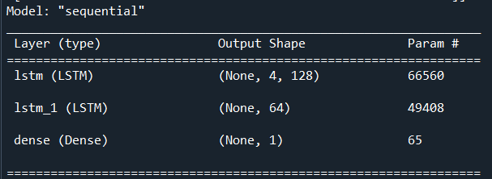
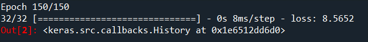
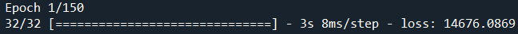

4 Analysis
4.1 Pre-Processing
Based on the correlation results, we decided to model the Close price of the stock based on variables Open, High, Low, and Volume.
For pre-processing, we experimented with standardizing and normalizing our data, but we found that omitting both pre-processing steps resulted in a model with a lower Mean-Squared Error (MSE). In theory, a stock’s price has no upward limit and so bounding it on an interval of the min and max values does not make sense.
Our next step is to split the data into an 80/20 split using train_test_split from the Scikit-learn library in Python. The 80% subset will be used for training our data and 20% will be used after compiling our model to test our model on unseen data. We decided on the 80/20 split because our original data set has 1,257 observations, which is enough data points to be able to train and test our model. Using the train_test_split method has the added benefit of also shuffling our data which prevents our model from prematurely overfitting to specific patterns in our data set.
4.2 Model Building
For our model we first initialize a sequential class from the keras library [13] which will serve as the container for our neural network. Keras is built on top of the tensorflow library [11] in Python. We then add an LSTM layer with 128 neurons with the parameter ‘return_sequences’ set to TRUE which will return 128 cells at every time step and will then output 4 states for each step. Essentially this will return the LSTM current state in the hidden layer to be used as input for the next time step in the series.
We then stack another LSTM layer with 64 cells with the ‘return_sequences’ parameter set to FALSE which will only return the y output in the hidden layer to be used for input in the next time step. Lastly, we add a Dense output layer utilizing the “linear” activation function because our output is linear. Our output layer only utilizes one neuron because we are only interested in predicting the Close price of the stock.

Figure 9: LSTM model output
We compile our model with the ‘rmsprop’ algorithm which uses backpropagation. We set the epoch to 150, which is the number of times the data will pass through the algorithm to find the optimal weights. Our loss variable is set to MSE, which will be the metric we use for evaluating our model. Next, we fit our model to our test X and test y variables. We get a final output of loss[MSE] of 8.6 at epoch 150 on our training subset.

Figure 10: Result of the 150th epoch
Considering that the min and max features from the dataset is $37 and $197 respectively, the sum of the squared difference between our model predictions and actual y values equates to a model that does a good job at predicting the closing price. Furthermore, we can see from the output below (Figure 11) that at the 1st epoch our loss[MSE] is 14676.1, but after running 149 more times and updating the weights at each step, it was able to drastically bring down the MSE.

Figure 11: Result of the 1st epoch